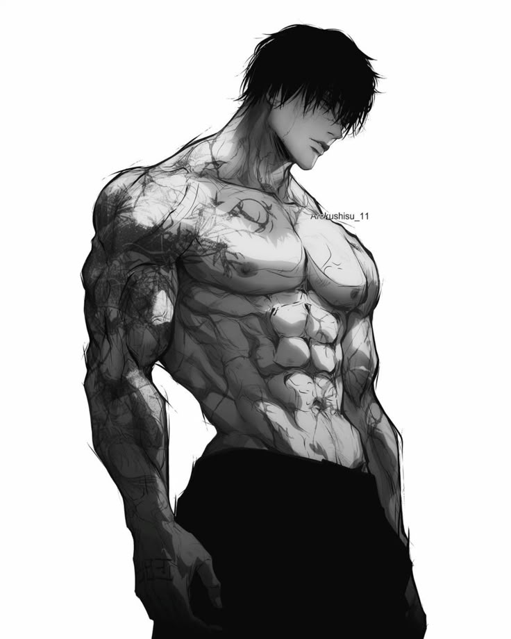

Brazilian Jiu-Jitsu (BJJ) is incorporated by Toji for its ground-fighting expertise, leveraging technique and leverage over brute force—though his immense strength makes it even deadlier. BJJ's submissions, chokes, and joint locks allow Toji to control and neutralize opponents on the ground. This captures his overwhelming ground dominance, using leverage to impose unbreakable control and force surrender.
